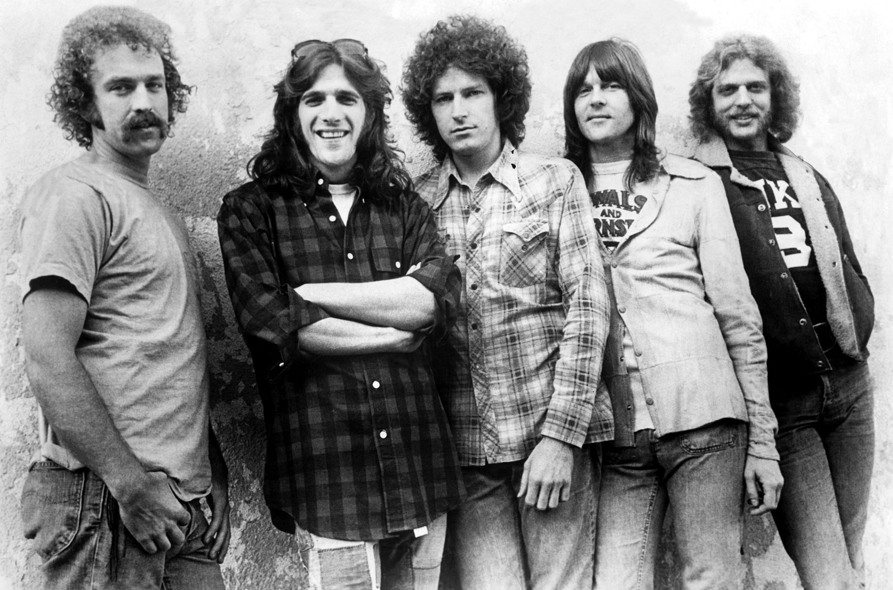
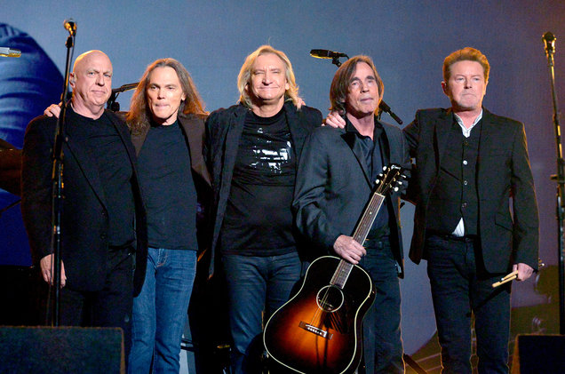

Story of the Band

The Eagles are an American rock band formed in Los Angeles in 1971. The founding members were Glenn Frey (guitars, vocals), Don Henley (drums, vocals), Bernie Leadon (guitars, vocals) and Randy Meisner (bass guitar, vocals). With five number-one singles, six number-one albums, six Grammy Awards, and five American Music Awards, the Eagles were one of the most successful musical acts of the 1970s.

The Eagles broke up in July 1980 but reunited in 1994 for the album Hell Freezes Over, a mix of live and new studio tracks. They toured consistently and were inducted into the Rock and Roll Hall of Fame in 1998. In 2007, the Eagles released Long Road Out of Eden, their first full studio album in 28 years and their sixth number-one album. The next year they launched the Long Road Out of Eden Tour in support of the album. In 2013, they began the extended History of the Eagles Tour in conjunction with the band's documentary release, History of the Eagles.
Eagles Official Site
Eagles Wikipedia Page
Songs

Their debut album, Eagles (1972), spawned three top 40 singles: "Take It Easy", "Witchy Woman", and "Peaceful Easy Feeling". Desperado (1973) was less successful, only reaching number 41 on the charts; neither of its singles reached the top 40. However, its songs "Desperado" and "Tequila Sunrise" became two of the band's most popular tracks. On the Border (1974) added guitarist Don Felder and produced two top 40 singles: "Already Gone" and the Eagles' first number one, "Best of My Love".
Their 1975 album One of These Nights included three top 10 singles: "One of These Nights", "Lyin' Eyes", and "Take It to the Limit", the first hitting the top of the charts. Guitarist and vocalist Joe Walsh also joined the band in 1975, replacing Leadon. Hotel California yielded two number-one singles, "New Kid in Town" and "Hotel California". Meisner left the band in 1977 and was replaced by Timothy B. Schmit. They released their last studio album for nearly 28 years in 1979 with The Long Run, which spawned three top 10 singles: "Heartache Tonight", "The Long Run", and "I Can't Tell You Why", the lead single being another chart-topping hit.